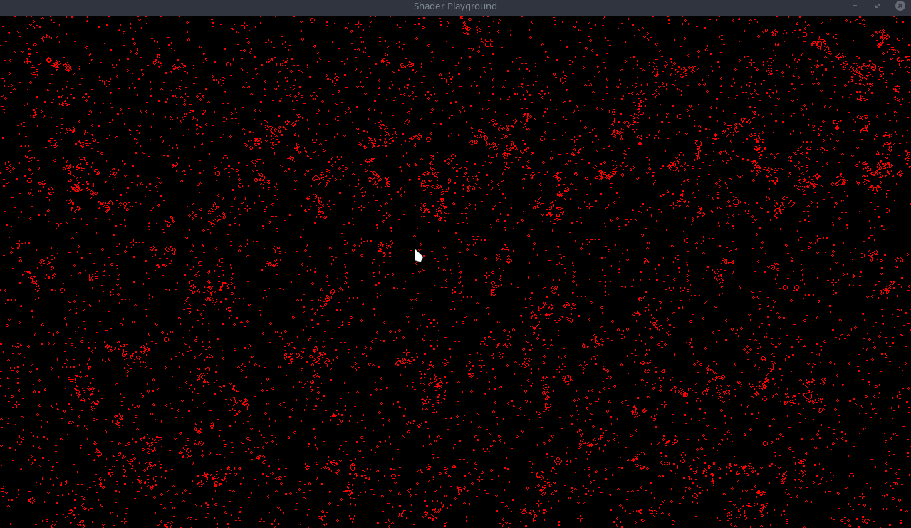

Bevy Game of Life Shader Example Part 4
I promised some additions to the original example provided so lets start with the easiest one, a simple camera controller. I just want to be able to pan around the simulation and zoom in a bit. I am going to run a cleanup and refactor for readability and cleanliness.
- Create three new files,
camera.rs,input.rs, andutils.rs, along with the a folderpipeline. It is important the pipeline folder is named exactly as thepipeline.rsfile as I am not usingmod.rsfiles. - Move the function
create_imageinto our utils folder and delete the image file. - Inside
pipelinefolder create aautomata.rsfile and move all the pipeline code from our past three posts into it. This includes thePipeline,TextureBindGroup,State, andNode.
I also renamed some things. Here is a mapping:
Pipeline->AutomataPipelineGameOfLifeImageBindGroup->AutomataTextureBindGroupGameOfLifeState->AutomataStateGameOfLifeNode->AutomataNode
Lets add a simple plugin to host from this file at the top:
#[derive(Resource, Clone, Deref, ExtractResource)]
pub struct GameOfLifeImage(pub Handle<Image>);
pub struct AutomataPipelinePlugin;
impl Plugin for AutomataPipelinePlugin {
fn build(&self, render_app: &mut App) {
render_app
.init_resource::<GameOfLifeAutomataPipeline>()
.add_system(queue_automata_bind_group.in_set(RenderSet::Queue));
}
}Back in the pipeline.rs file, it should be empty, so lets add another plugin to host all pipeline plugins.
pub struct PipelinesPlugin;
impl Plugin for PipelinesPlugin {
fn build(&self, app: &mut App) {
let render_app = app.sub_app_mut(RenderApp);
render_app
.add_plugin(automata::AutomataPipelinePlugin);
let mut render_graph = render_app.world.resource_mut::<RenderGraph>();
let gol_id = render_graph.add_node("game_of_life", automata::AutomataNode::default());
/*
* Automata Pipeline => Camera Driver
*/
render_graph.add_node_edge(gol_id, bevy::render::main_graph::node::CAMERA_DRIVER);
}
}We are moving the render_app implementation from our ShaderPlaygroundPlugin to this new PipelinesPlugin.
Don't forget to add the PipelinesPlugin to the ShaderPlaygroundPlugin in lib.rs!
Camera
Onto setting up a camera controller.
const CAMERA_MOVE_SPEED: f32 = 500.0;
pub struct CameraPlugin;
impl Plugin for CameraPlugin {
fn build(&self, app: &mut App) {
app.add_system(camera_controller);
}
}
fn camera_controller(
time: Res<Time>,
keyboard_input: Res<Input<KeyCode>>,
mut mouse_wheel_events: EventReader<MouseWheel>,
mut query: Query<(&mut Transform, &mut OrthographicProjection), With<Camera>>,
) {
for (mut transform, mut ortho) in query.iter_mut() {
let up = keyboard_input.pressed(KeyCode::W);
let down = keyboard_input.pressed(KeyCode::S);
let left = keyboard_input.pressed(KeyCode::A);
let right = keyboard_input.pressed(KeyCode::D);
let x_axis = right as i8 - left as i8;
let y_axis = up as i8 - down as i8;
let mut move_delta = Vec2::new(x_axis as f32, y_axis as f32);
// =========== Move the camera around =========== //
if move_delta != Vec2::ZERO {
move_delta /= move_delta.length();
let z = transform.translation.z;
transform.translation +=
move_delta.extend(z) * CAMERA_MOVE_SPEED * time.delta_seconds();
// Important! We need to restore the Z values when moving the camera around.
// Bevy has a specific camera setup and this can mess with how our layers are shown.
transform.translation.z = z;
}
// =========== Zoom =========== //
for MouseWheel { x, y, unit } in mouse_wheel_events.iter() {
let mut x_scroll_diff = 0.0;
let mut y_scroll_diff = 0.0;
match unit {
MouseScrollUnit::Line => {
x_scroll_diff += x;
y_scroll_diff += y;
}
MouseScrollUnit::Pixel => {
// I just took this from three-rs, no idea why this magic number was chosen ¯\_(ツ)_/¯
const PIXELS_PER_LINE: f32 = 38.0;
y_scroll_diff += y / PIXELS_PER_LINE;
x_scroll_diff += x / PIXELS_PER_LINE;
}
}
if x_scroll_diff != 0.0 || y_scroll_diff != 0.0 {
if y_scroll_diff < 0.0 {
ortho.scale *= 1.05;
} else {
ortho.scale *= 1.0 / 1.05;
}
ortho.scale = ortho.scale.clamp(0.15, 5.);
}
}
}
}
...
// in our ShaderPlaygroundPlugin
app
// Extract the game of life image resource from the main world into the render world
// for operation on by the compute shader and display on the sprite.
.add_plugin(ExtractResourcePlugin::<GameOfLifeImage>::default())
.add_plugin(camera::CameraPlugin)
.add_startup_system(setup);
...A simple camera controller. We generate a move delta based on the pressed keys and then using bevy's builtin time resource, manipulate the
camera's position for buttery smooth movement. Adjust the movement constant to your liking. The zoom just listens for scroll events and adjusts
the orthographic projection's scale. The MouseScrollUnit::Pixel case is taken from an online example I found. I don't know what triggers a
MouseScrollUnit::Pixel, but I have only seen Line units so far, but better safe than sorry!
To better see that our camera works well, you can replace the ClearColor(Color::BLACK) with ClearColor(Color::WHITE).
You should now be able to pan around the simulation and also zoom!

The main thing I want this part to focus on would be drawing onto our canvas. We will be using ANOTHER ;) compute pipeline to handle this for us. Lets setup the mouse positioning system that will be used.
Setting up our input bindings lets fill out input.rs file.
We need a resource to hold our mouse position, previous mouse position, and if our mouse button is down.
pub struct InputPlugin;
impl Plugin for InputPlugin {
fn build(&self, app: &mut App) {
app.init_resource::<AutomataParams>();
}
}
#[derive(Default, Resource, ExtractResource, Clone)]
pub struct AutomataParams {
pub mouse_pos: Vec2,
pub is_drawing: bool,
pub prev_mouse_pos: Vec2,
}
pub fn update_input_state(
window_query: Query<&Window>,
mut input_state: ResMut<AutomataParams>,
camera_q: Query<(&Camera, &GlobalTransform)>,
mut mouse_button_input_events: EventReader<MouseButtonInput>,
) {
let Ok(primary_window) = window_query.get_single() else { return };
// get the camera info and transform
let Ok((camera, camera_transform)) = camera_q.get_single() else { return };
// Determine button state
for event in mouse_button_input_events.iter() {
if event.button == MouseButton::Left {
input_state.is_drawing = event.state == ButtonState::Pressed;
}
}
...
}Mouse button is a simple event reader. The previous and current mouse position is a bit more complicated as we need to convert from world space to canvas space.
if let Some(world_position) = primary_window
.cursor_position()
.and_then(|cursor| camera.viewport_to_world(camera_transform, cursor))
.map(|ray| ray.origin.truncate())
{
}Grabbing the world_position from the window and camera is ripped from the bevy cheatbook. Now that we have the world coordinates, we need a way to transform them into curstor coordinates. In utils add a function:
use bevy::prelude::Vec2;
pub fn world_pos_to_canvas_pos(world_pos: Vec2) -> Vec2 {
world_pos
+ Vec2::new(
crate::SIM_SIZE.0 as f32 / 2.0,
crate::SIM_SIZE.1 as f32 / 2.0,
)
}This just takes the world position and adds half the size of the canvas to it. Finish off the input system.
if let Some(world_position) = primary_window
.cursor_position()
.and_then(|cursor| camera.viewport_to_world(camera_transform, cursor))
.map(|ray| ray.origin.truncate())
{
params.prev_mouse_pos = params.mouse_pos; // NEW
params.mouse_pos =
crate::utils::world_pos_to_canvas_pos(world_position * Vec2::new(1.0, -1.0)); // NEW
}world_position * Vec2::new(1.0, -1.0) is just flipping the y axis since images have y going down and wgpu has y going up.
Add the input plugin to the ShaderPlaygroundPlugin along with the ExtractResourcePlugin
...
.add_plugin(ExtractResourcePlugin::<GameOfLifeImage>::default())
.add_plugin(ExtractResourcePlugin::<AutomataParams>::default())
.add_plugin(camera::CameraPlugin)
.add_plugin(input::InputPlugin)
.add_plugin(pipeline::PipelinesPlugin)
.add_plugin(ui::UIPlugin)
.add_startup_system(setup);Draw Pipeline
We are going to need bytemuck so add that to your project with cargo add bytemuck.
Add a new file in pipeline folder called draw. This is going to look really similar to the automata setup, just with a few minor tweaks.
pub struct AutomataDrawPipelinePlugin;
impl Plugin for AutomataDrawPipelinePlugin {
fn build(&self, render_app: &mut App) {
render_app
.init_resource::<AutomataDrawPipeline>()
.add_system(queue_draw_bind_group.in_set(RenderSet::Queue));
}
}
// ================================== Constants ================================== //
#[repr(C)]
#[derive(Copy, Clone, bytemuck::Pod, bytemuck::Zeroable)]
pub struct AutomataPushConstants {
draw_start: [f32; 2],
draw_end: [f32; 2],
draw_radius: f32,
}
impl AutomataPushConstants {
pub fn new(draw_start: Vec2, draw_end: Vec2, draw_radius: f32) -> Self {
Self {
draw_radius,
draw_end: draw_end.to_array(),
draw_start: draw_start.to_array(),
}
}
}This new struct holds our push constants that we will pass to our draw pipeline shader.
PushConstants are a way to pass data to a shader without having to create a buffer. The downside is that the data is limited and is much smaller than the limit on buffers. The upside is that it is faster than buffers.
// ================================== Pipeline ================================== //
#[derive(Resource)]
pub struct AutomataDrawPipeline {
draw_pipeline: CachedComputePipelineId,
draw_bind_group_layout: BindGroupLayout,
}
impl FromWorld for AutomataDrawPipeline {
fn from_world(world: &mut World) -> Self {
let pipeline_cache = world.resource::<PipelineCache>();
let draw_bind_group_layout =
world
.resource::<RenderDevice>()
.create_bind_group_layout(&BindGroupLayoutDescriptor {
label: Some("Game of Life Bind Group Layout"),
entries: &[BindGroupLayoutEntry {
binding: 0,
visibility: ShaderStages::COMPUTE,
ty: BindingType::StorageTexture {
access: StorageTextureAccess::ReadWrite,
format: TextureFormat::Rgba8Unorm,
view_dimension: TextureViewDimension::D2,
},
count: None,
}],
});
let brush_shader = world.resource::<AssetServer>().load("shaders/draw.wgsl");
let draw_pipeline = pipeline_cache.queue_compute_pipeline(ComputePipelineDescriptor {
shader: brush_shader,
shader_defs: vec![],
entry_point: Cow::from("draw"),
layout: vec![draw_bind_group_layout.clone()],
label: Some(std::borrow::Cow::Borrowed("Game of Life Draw Pipeline")),
push_constant_ranges: [PushConstantRange {
stages: ShaderStages::COMPUTE,
range: 0..std::mem::size_of::<AutomataPushConstants>() as u32,
}]
.to_vec(),
});
AutomataDrawPipeline {
draw_pipeline,
draw_bind_group_layout,
}
}
}Our draw_pipeline has a new value: push_constant_ranges. The push_constant_ranges is a range of bytes that can be passed to the shader via PushConstants.
// ================================== BindGroup ================================== //
#[derive(Resource)]
struct AutomataDrawBindGroup(pub BindGroup);
pub fn queue_draw_bind_group(
mut commands: Commands,
render_device: Res<RenderDevice>,
pipeline: Res<AutomataDrawPipeline>,
gpu_images: Res<RenderAssets<Image>>,
game_of_life_image: Res<GameOfLifeImage>,
) {
let view = &gpu_images[&game_of_life_image.0];
let draw_bind_group = render_device.create_bind_group(&BindGroupDescriptor {
label: Some("Game of Life Draw Bind Group"),
layout: &pipeline.draw_bind_group_layout,
entries: &[BindGroupEntry {
binding: 0,
resource: BindingResource::TextureView(&view.texture_view),
}],
});
commands.insert_resource(AutomataDrawBindGroup(draw_bind_group));
}
// ================================== Nodes ================================== //
pub enum AutomataDrawState {
Loading,
Update,
}
pub struct AutomataDrawNode {
state: AutomataDrawState,
}
impl Default for AutomataDrawNode {
fn default() -> Self {
Self {
state: AutomataDrawState::Loading,
}
}
}Our node only has two states: Loading and Update as we don't need to initialize anything.
impl render_graph::Node for AutomataDrawNode {
fn update(&mut self, world: &mut World) {
let pipeline_cache = world.resource::<PipelineCache>();
let pipeline = world.resource::<AutomataDrawPipeline>();
// if the corresponding pipeline has loaded, transition to the next stage
match self.state {
AutomataDrawState::Loading => {
if let CachedPipelineState::Ok(_) =
pipeline_cache.get_compute_pipeline_state(pipeline.draw_pipeline)
{
self.state = AutomataDrawState::Update;
}
}
AutomataDrawState::Update => {}
}
}
fn run(
&self,
_graph: &mut render_graph::RenderGraphContext,
render_context: &mut RenderContext,
world: &World,
) -> Result<(), render_graph::NodeRunError> {
let params = &world.resource::<AutomataParams>();
if params.is_drawing {
let texture_bind_group = &world.resource::<AutomataTextureBindGroup>().0;
let draw_bind_group = &world.resource::<AutomataDrawBindGroup>().0;
let pipeline_cache = world.resource::<PipelineCache>();
let pipeline = world.resource::<AutomataDrawPipeline>();
let mut pass = render_context
.command_encoder()
.begin_compute_pass(&ComputePassDescriptor::default());
pass.set_bind_group(0, texture_bind_group, &[]);
// select the pipeline based on the current state
match self.state {
AutomataDrawState::Loading => {}
AutomataDrawState::Update => {
let draw_pipeline = pipeline_cache
.get_compute_pipeline(pipeline.draw_pipeline)
.unwrap();
let pc =
AutomataPushConstants::new(params.mouse_pos, params.prev_mouse_pos, 10.0);
pass.set_pipeline(draw_pipeline);
pass.set_bind_group(0, draw_bind_group, &[]);
pass.set_push_constants(0, bytemuck::cast_slice(&[pc]));
pass.dispatch_workgroups(
SIM_SIZE.0 / WORKGROUP_SIZE,
SIM_SIZE.1 / WORKGROUP_SIZE,
1,
);
}
}
}
Ok(())
}
}Inside our run, we first check to see if we are drawing at all. If so, we pull the current mouse position as well as the previous mouse position and instantiate the AutomataPushConstants with a radius of 10.0.
We then setup the pipeline and add the push constants with bytemuck::cast_slice.
With that, our draw pipeline is complete and ready. Lets add it to our pipelines plugin:
impl Plugin for PipelinesPlugin {
fn build(&self, app: &mut App) {
let render_app = app.sub_app_mut(RenderApp);
render_app
.add_plugin(draw::AutomataDrawPipelinePlugin)
.add_plugin(automata::AutomataPipelinePlugin);
let mut render_graph = render_app.world.resource_mut::<RenderGraph>();
let gol_id = render_graph.add_node("game_of_life", automata::AutomataNode::default());
let draw_id = render_graph.add_node("game_of_life_draw", draw::AutomataDrawNode::default());
...We now have a new node to use in our render graph! We want the draw_node to run before our automata_node.
let mut render_graph = render_app.world.resource_mut::<RenderGraph>();
let gol_id = render_graph.add_node("game_of_life", automata::AutomataNode::default());
let draw_id = render_graph.add_node("game_of_life_draw", draw::AutomataDrawNode::default());
/*
* Draw Pipeline => Automata Pipeline => Camera Driver
*/
render_graph.add_node_edge(draw_id, gol_id);
render_graph.add_node_edge(gol_id, bevy::render::main_graph::node::CAMERA_DRIVER);This creates a new edge from the draw_node to the automata_node and then from the automata_node to the camera_driver! Onto the draw shader!!
Draw Shader
create a file called draw.wgsl in our shaders folder and add the following starter code:
struct PushConstants {
draw_start: vec2<f32>,
draw_end: vec2<f32>,
draw_radius: f32,
}
var<push_constant> pc: PushConstants;
@group(0) @binding(0)
var texture: texture_storage_2d<rgba8unorm, read_write>;
@compute @workgroup_size(8, 8, 1)
fn draw(@builtin(global_invocation_id) invocation_id: vec3<u32>)
{
let pixel = vec2<u32>(invocation_id.xy);
let size = vec2<u32>(textureDimensions(texture));
if (pixel.x >= size.x && pixel.y >= size.y) {
return ;
}
// Draw circle
if (pc.draw_radius > 0.0) {
}
}
This is all familiar except for the new push_contant and a new function: textureDimensions. The push_contant variable should match what we are passing from
rust side of things. We are passing in the start and end of the mouse position as well as the radius of the circle we want to draw.
textureDimensions function returns the dimensions of the texture we are sampling from.We use this to check if the current pixel is outside of the texture
bounds.
Now we pass in a start and end position, so we need to generate a line between these two points. Searching the web I found the following stackoverflow
thread with many examples: shortest-distance-between-a-point-and-a-line-segment
// Line v->w, point p
// https://stackoverflow.com/questions/849211/shortest-distance-between-a-point-and-a-line-segment
fn closest_point_on_line(v: vec2<f32>, w: vec2<f32>, p: vec2<f32>) -> vec2<f32> {
let c = v - w;
// length squared
let l2 = dot(c, c);
if (l2 == 0.0) {
return v;
}
let t = max(0.0, min(1.0, dot(p - v, w - v) / l2));
let projection = v + t * (w - v);
return projection;
}
Challenge: Feel free to scower the web for your own implementation and try replacing my implementation with yours!
Using this in our draw function:
// Draw circle
if (pc.draw_radius > 0.0) {
let pos = vec2<f32>(pixel);
let point_on_line = closest_point_on_line(pc.draw_start, pc.draw_end, pos);
}
We need to cast our pixel variable to an f32 to be used by our closest_point_on_line function. We can now use this point to draw with. Add a new function
for drawing a circle:
fn draw_particle_circle(pos: vec2<f32>, draw_pos: vec2<f32>, radius: f32) {
let y_start = draw_pos.y - radius;
let y_end = draw_pos.y + radius;
let x_start = draw_pos.x - radius;
let x_end = draw_pos.x + radius;
if (pos.x >= x_start && pos.x <= x_end && pos.y >= y_start && pos.y <= y_end) {
let diff = pos - draw_pos;
let dist = length(diff);
if (round(dist) <= radius) {
textureStore(texture, vec2<i32>(pos), vec4<f32>(1.0, 1.0, 1.0, 1.0));
}
}
}
This looks pretty similar to how you would draw a circle on the rust side. We create a bounding box based on the radius and make sure our click position falls within that box. If it does, we calculate the distance from the click position to the current pixel and if that distance is less than or equal to the radius, we store an alive cell at that position. (remember our alive cells are marked by a 1.0 value in the r channel of the pixel color).
Finish off our shader:
// Draw circle
if (pc.draw_radius > 0.0) {
let pos = vec2<f32>(pixel);
let point_on_line = closest_point_on_line(pc.draw_start, pc.draw_end, pos);
draw_particle_circle(pos, point_on_line, pc.draw_radius);
}
Complete
Running the example you should be able to draw on the simulation with your mouse:

Bonus
One thing you might notice is our simulation doesn't wrap between the edges. We can fix this by manipulating our game_of_life.wgsl slightly.
In the is_alive function we can add the following:
fn is_alive(location: vec2<i32>, offset_x: i32, offset_y: i32) -> u32 {
let size = vec2<i32>(textureDimensions(texture));
var loc = ((location + vec2<i32>(offset_x, offset_y)) + size) % size;
let value: vec4<f32> = textureLoad(texture, loc);
return u32(value.x);
}
I broke out the calculations onto multiple lines for readability. We first get the dimensions of the texture we are sampling from. We then add the offset to the current location, add the size to that result and finally mod the result by the size. This will wrap the edges of the texture both x and y.
With that, our cells will now wrap around the edges of the simulation! Awesome!
Challenge: Create a method to draw a square instead of a circle. For even more complexity, you can add a push_constant bool to pass in whether you want to draw a circle or a square.
Code can be found on github: Part 4